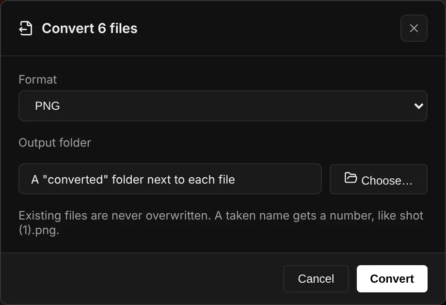

Deep dive
Batch converter
Convert a folder of images to PNG, JPG, TIFF, BMP, TGA or lossless WebP, with the output kept next to the originals.
Converting
Select the images, right-click one of them, and choose Convert…. The dialog asks for the format and the output folder. The folder defaults to a converted folder next to each file. Press Convert and the work runs in the background. You can cancel a running job.

Formats
- PNG
- JPG
- TIFF
- BMP
- TGA
- WebP (lossless)
Which files can be converted
PNG, JPG, JPEG, WebP, BMP, TGA, TIF, TIFF, HDR and EXR files can be converted. Other files are left out of the selection, and the menu item only appears when at least one file in the selection can be converted.
Existing files
The converter never overwrites a file. If a converted name already exists, it adds a number to the new name instead.
Found a mistake or something missing? Edit this page on GitHub.